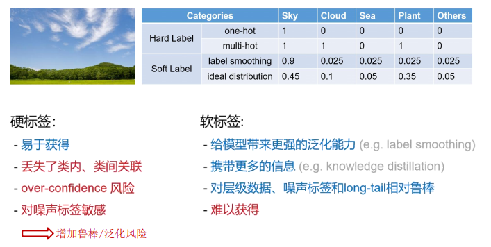

从标签平滑和知识蒸馏理解Soft Label¶
**参考公众号：Smarter **
参考链接：
https://zhuanlan.zhihu.com/p/101553787
https://zhuanlan.zhihu.com/p/353472061
Hard Label vs Soft Label¶

我们平常一般意义上的标签多为hard label，为一个标注框赋予单一的标签。
hard label更容易标注，但是会丢失类内、类间的关联，并且引入噪声。
soft label给模型带来更强的泛化能力，携带更多的信息，对噪声更加鲁棒，但是获取难度大。
由此引出label smoothing(标签平滑)
标签平滑¶
简单的解释是，它将神经网络的训练目标从“1”调整为“1-label smoothing adjustment”，这意味着神经网络被训练得对自己的答案不那么自信。默认值通常是 0.1，这意味着目标答案是 0.9(1 - 0.1)而不是 1。

正如图像所显示的，标签平滑为最终的激活产生了更紧密的聚类和更大的类别间的分离。
知识蒸馏¶
模型压缩的一种方法。模型压缩大体上可以分为 5 种：
- 模型剪枝：即移除对结果作用较小的组件，如减少 head 的数量和去除作用较少的层，共享参数等，ALBERT属于这种；
- 量化：比如将 float32 降到 float8；
- 知识蒸馏：将 teacher 的能力蒸馏到 student上，一般 student 会比 teacher 小。我们可以把一个大而深的网络蒸馏到一个小的网络，也可以把集成的网络蒸馏到一个小的网络上。
- 参数共享：通过共享参数，达到减少网络参数的目的，如 ALBERT 共享了 Transformer 层；
- 参数矩阵近似：通过矩阵的低秩分解或其他方法达到降低矩阵参数的目的；
也就是说，知识蒸馏就是先训练一个高精度的网络（延时长，模型大，参数多），称为Teacher，以Teacher的输入输出作为训练样本与标签去训练另一个网络（模型小，延时小）
基本框架¶

为什么不去直接拿原有的标签数据训练Student，而是要先训练一个Teacher再拿Teacher的结果作为标签？¶
因为网络的输出经过softmax，将预测结果转化为概率的形式，对于一张图片，每种结果都有对应的概率而不是绝对的一种物体，而在传统的训练过程(Hard-target)中，所有负标签都被统一对待。也就是说，知识蒸馏的训练方式使得每个样本给Student模型带来的信息量大于传统的训练方式。这给Student网络到来更多的可学习信息。即Student的训练标签为soft-target而不是hard label
softmax处理后的概率有些会十分接近零，对网络的作用几乎为零¶
原softmax： $$ s = \frac{exp(z_i)}{\sum_jexp(z_j)} $$ 加入温度T $$ s = \frac{exp(z_i/T)}{\sum_jexp(z_j/T)} $$ 这可以提高负样本的概率
其中qi是每个类别输出的概率，zi是每个类别输出的 logits，T就是温度。当温度T=1时，这就是标准的 Softmax 公式。T越高，softmax的output probability distribution越趋于平滑，其分布的熵越大，负标签携带的信息会被相对地放大，模型训练将更加关注负标签。
温度T有这样几个特点：
- 原始的softmax函数是T=1时的特例；T<1时，概率分布比原始更"陡峭"，也就是说，当 T\to0 时，Softmax 的输出值会接近于 Hard-target；T>1时，概率分布比原始更“平缓”。
- 随着T的增加，Softmax 的输出分布越来越平缓，信息熵会越来越大。温度越高，softmax上各个值的分布就越平均，思考极端情况，当 {T=\infty} ，此时softmax的值是平均分布的。
- 不管温度 T 怎么取值，Soft-target都有忽略相对较小的 p_i（Teacher模型在温度为T时softmax输出在第i类上的值)携带的信息的倾向。
所以
- 当想从负标签中学到一些信息量的时候，温度T应调高一些；
- 当想减少负标签的干扰的时候，温度T应调低一些；
总的来说，T的选择和Student模型的大小有关，Student模型参数量比较小的时候，相对比较低的温度就可以了。因为参数量小的模型不能学到所有Teacher模型的知识，所以可以适当忽略掉一些负标签的信息。
最后，在整个知识蒸馏过程中，我们先让温度T升高，然后在测试阶段恢复“低温“（T=1)，从而将原模型中的知识提取出来，因此将其称为是蒸馏。